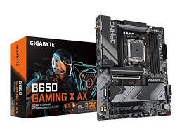
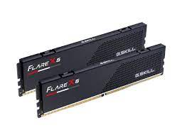
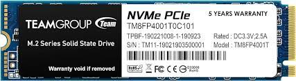
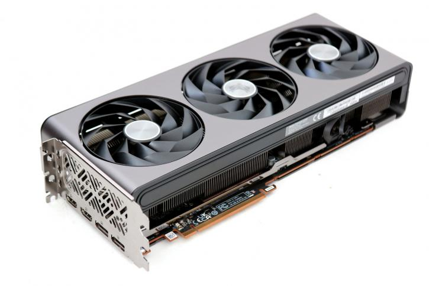
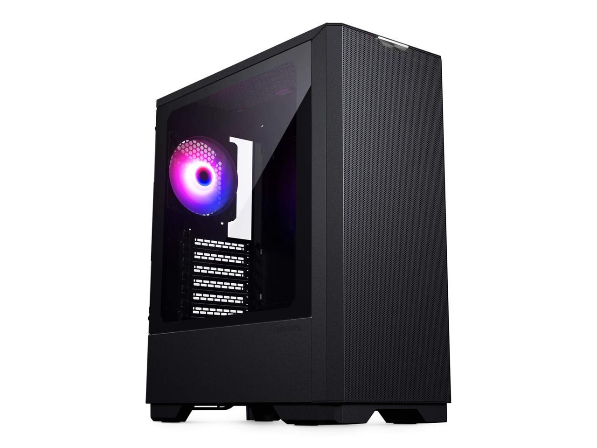
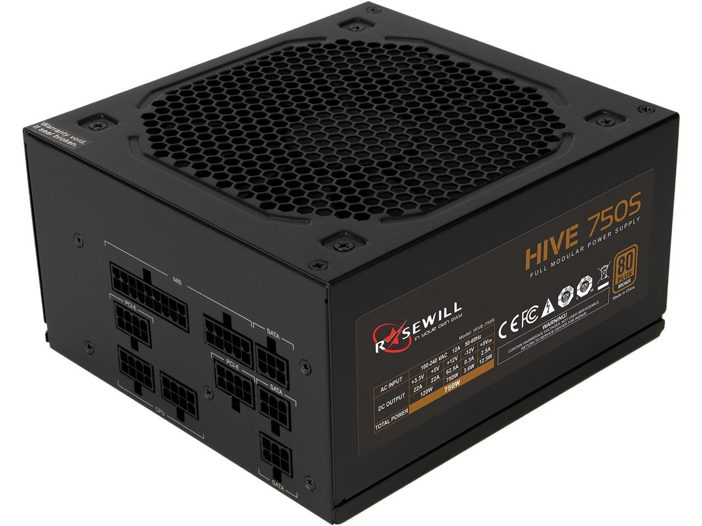

| System Total = $ |
 |
AMD Ryzen 5 7600 CPU |
→ |
- Price: $200
-
The AMD Ryzen 7600 is the newer generation version of the AMD
Ryzen 5600 cpu. It has the same 6-cores and 12-threads but is
able to run at higher speeds. Not to mention this cpu comes with
a cooler that will save you even more money.
|
|  |
Gigabyte B650 Gaming X AX Motherboard |
→ |
- Price: $160
-
The MSI B550 A-Pro motherboard has everything one will ever need
for a budget gaming pc. Supports dual channel DDR4 memory, 2 m.2
drive slots, upgraded audio, and enough USB slots for the
necessities.
|
|

|
G.skill Flare 32Gb (2x16Gb) DDR5 6000 Ram |
→ |
- Price: $96
-
The Team T-Force Vulcan 2x8GB kit is all the memory you will
need to play any game. At it's price point and 3600mt/s speed,
this kit is hard to beat and is solid for many builds.
|
|  |
Teamgroup MP34 2Tb M.2 NVME SSD |
→ |
- Price: $89
-
The Teamgroup MP34 1Tb SSD is a solid (pun-intended) M.2 drive
that has enough storage for a good handful of games. If you are
looking to play newer titles that generally require more
storage, perhaps a 2Tb SSD or an extra SSD should be looked
into.
|
|  |
Radeon RX 7800 XT |
→ |
- Price: $500
-
At this price range, the Predator Bifrost Intet Arc A750 is a
tough graphics card to out perform. 144fps gaming at 1080p can
be acheived on most games with some requiring to lower settings.
However, even the top gamers do not play on max settings, so
neither should you if you are looking to play games at a
high-level.
|
|  |
Phanteks Eclispe G300A Mid-Tower Case |
→ |
- Price: $50/$70
-
The Phanteks Eclispe G300 case is a solid and budget friendly
case that comes with a 1-fan and 3-fan option. The mid-tower
size ensures all components will fit easily and provide for an
easier building experience (if you are planning to build it
manually). Both options still may require the purchase of
additional fans. The case choice is the most flexible of all the
items listed and is really up to you what you want. For those
who do not know, this case will provide you will all that you
need and may want.
|
|  |
Rosewill HIVE Series 750W Fully Modular PSU Plus Bronze Certified
|
→ |
|